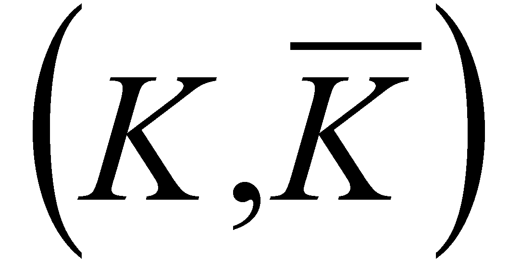

|
|
|
According to The Encyclopedic Dictionary, the element dicho comes from the Greek word dicha - separation, in two parts (the two meanings belong to two different words which contain the same component dicho, namely the dichotermy and dichotomy). The component tomia comes also from the Greek language, more precisely from tome, which means section, cutting. Semantically speaking, the dictionaries show three values for the term dichotomy:
(LOG) Division with two members;
(BOT) Ramification method of the stems in two equal branches which are also divided in two other equal branches, so on.
Determination key of the types and species of plants and animals.
A very useful specification is given by The Dictionary of Logics in case of the term known as dichotomic classification - “Classification in two classes of the objects belonging to a set. For example, the natural numbers are divided in even and uneven. Usually, d.c. is made according to a property and it generates a positive and a negative class (complementary). It may be said that any property is able to generate a d.c.  in relation with the class to which it is applied to.”
The same dictionary shows us the existence of another classification, the positive politomic classification, which is “a classification of a set of objects into n classes (n>2), so that all the classes are positive (there are no classes which are made-up from a simple complementarity). The categorization system used in the biology field is an example of p.p.c”.
Based on the above mentioned issues, it is clear that the dichotomy is also a relation (an abstract process) of separating two parts of an abstract object, parts which will be assigned with different qualitative attributes although they are coming from the same initial object. Therefore, the dichotomy applied to an abstract object (base) will separate it in other two objects which will become complementary, and reciprocally, two abstract objects which are considered as complementary have a common origin - its base divided by means of dichotomy.
Copyright © 2006-2011 Aurel Rusu. All rights reserved.